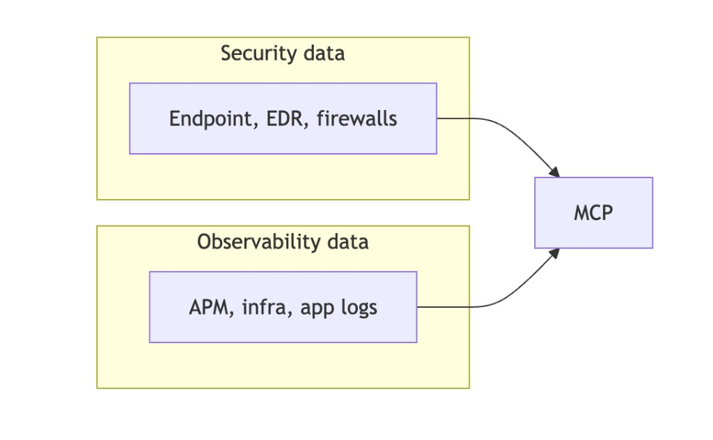
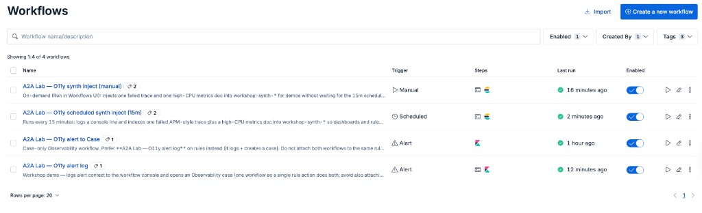
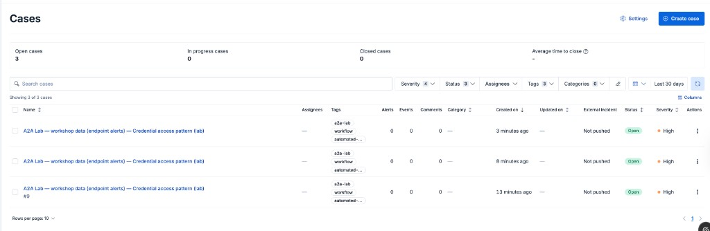

Why this matters
In real deployments, Security and Observability often live in separate serverless projects and clusters. That separation is healthy for ownership—but it becomes a liability when analysts must guess whether an incident is noisy or business-critical.
The pattern
Build a Security agent and an Observability agent in separate Serverless projects, then wire Kibana Workflows so an alert can POST to the other project’s /api/agent_builder/converse before a Case is created.
Reference workflow
Security telemetry (endpoint, EDR, firewalls) and Observability signals (APM, infrastructure, application logs) both land in Elastic—where rules, workflows, cases, and dashboards give analysts a single narrative. Linked Agent Builder agents add cross-project reasoning when those streams live in separate serverless projects.

From the cloud-path lab
elastic-agent-builder-a2a-cloud-path pushes workshop workflows to both Kibanas: manual synth inject (Run on demand), scheduled 15m injectors (disabled in YAML until you enable the toggle), and alert workflows that log, call the peer project via HTTP converse, then open a Case with drill text plus the model reply.


Value for sellers & customers
Positioning line: Detect attacks with application impact—not instead of it.
AE training: AI prompt library → — copy-ready prompts for Claude / ChatGPT
Hands-on
The cloud-path scripts provision two Serverless projects, seed workshop-synth-* data, create Agent Builder agents, and PUT the workflow YAML shown on slide 4.
The Instruqt track elastic-a2a-serverless-agent-builder teaches the same A2A story in-browser: Serverless Observability and Serverless Security each get a lab tab, both reverse-proxied through the single workstation host (nginx on 8080 / 8081) after learners paste their Cloud Kibana URLs into .env.
elastic-agent-builder-a2a-workshop/.elastic-agent-builder-a2a-cloud-path and Agent Skills when you are not in a sandbox.Lab automation (workflows + keys): elastic-agent-builder-a2a-cloud-path →
AE training: AI prompt library → — personas, objections, emails, discovery
Use Next / Prev below, dot buttons, or ← → / Space.